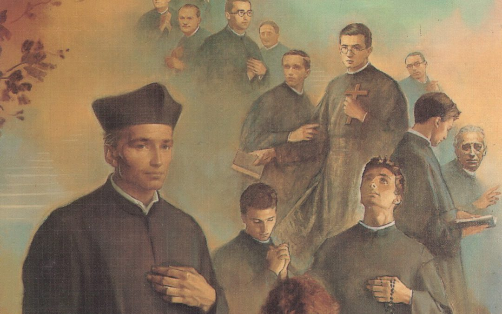
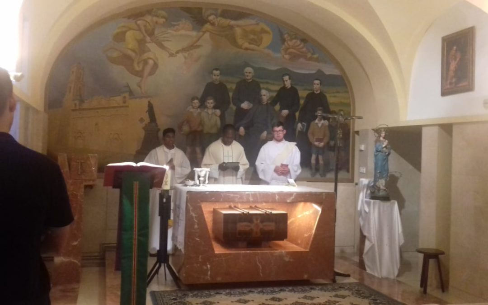

Mártires escolapios

Fuente: Escolapios Peralta de la Sal.
| Año | Acontecimiento |
|---|---|
| 1856 | Nace en Alquézar. |
| 1876 | Entra al noviciado en Peralta de la Sal. |
| 1880 | Hace sus primeros votos. |
| 1883 | Realiza la profesión solemne. |
| 1920 | Pasa de la cocina al refectorio. |
| Hacia 1930 | Llega a la comunidad de Peralta de la Sal. |
| 1936 | Muere el 9 de agosto cerca de Azanuy. |
| 1995 | Es beatificado por Juan Pablo II. |

Fuente: Escolapios Peralta de la Sal.

Fuente: Escolapios Peralta de la Sal.
El mapa muestra la zona de Huesca donde se encuentran Alquézar, Peralta de la Sal y Azanuy.
Fuente: Google Maps.
Este video muestra el municipio del que forma parte Peralta de la Sal. Se incluye como contexto y NO es un documental sobre Florentín.
Fuente: Peralta de Calasanz en Vimeo.